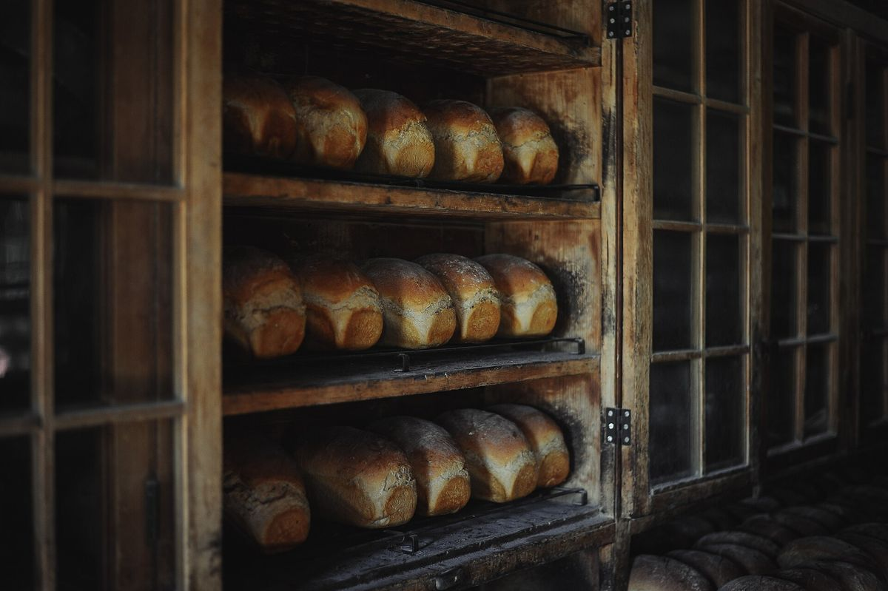
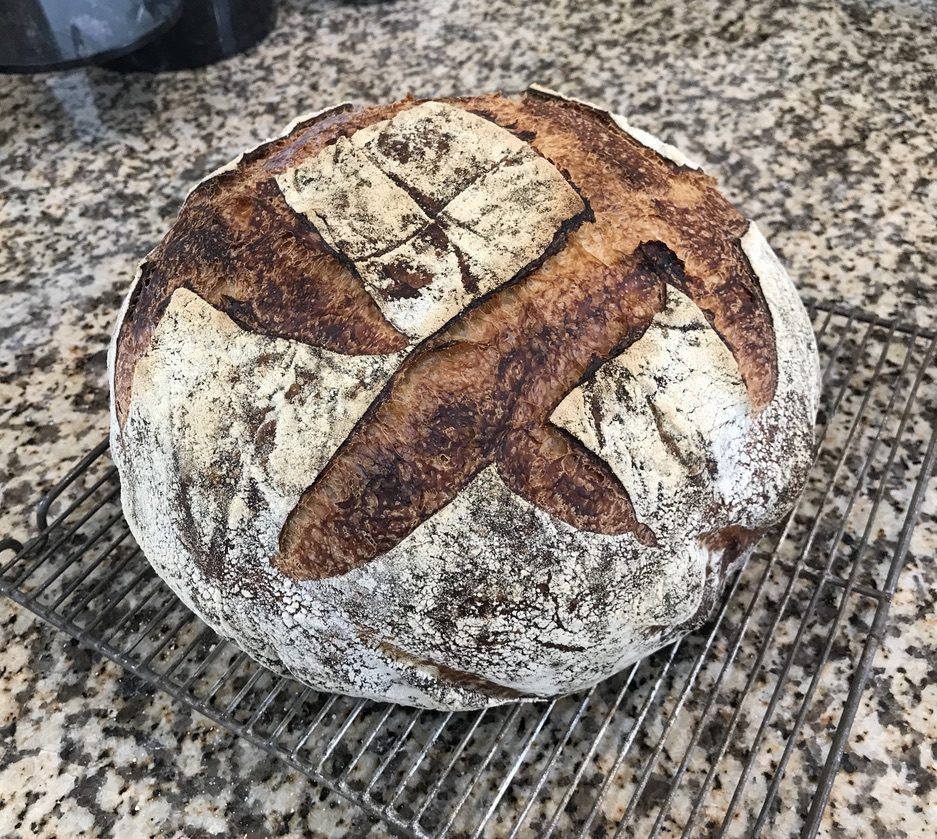
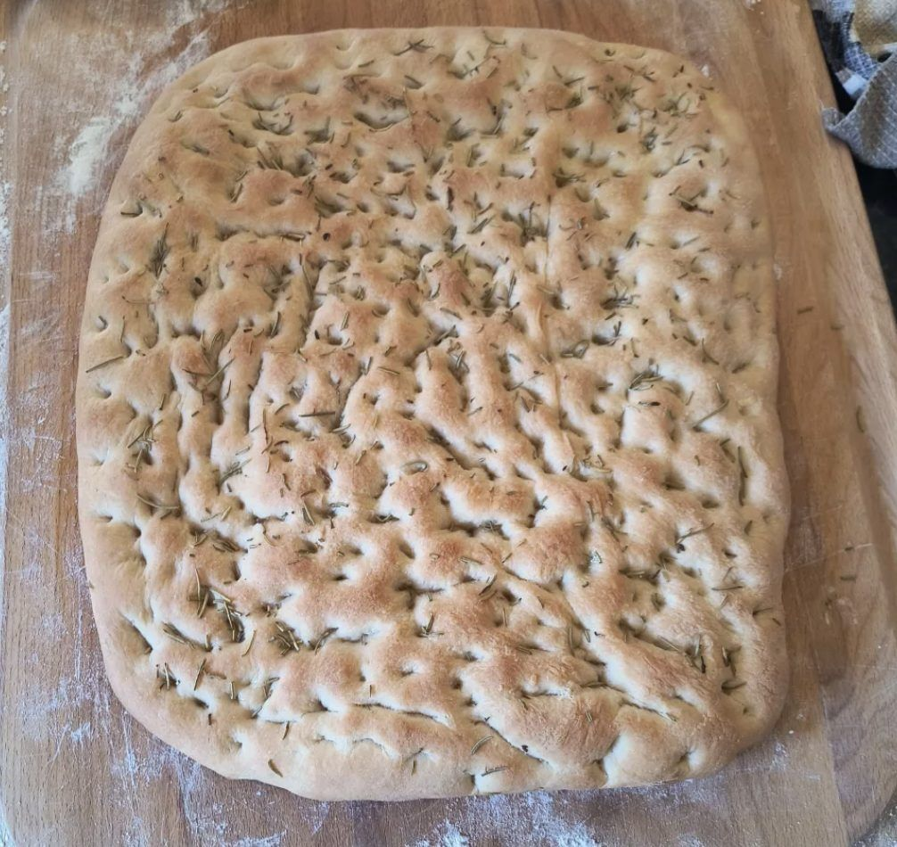
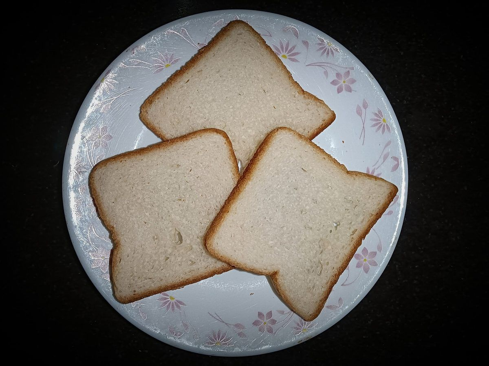

メニュー
メニューは準備中です
お品書きや価格は、確認でき次第ご案内します。ここでは写真だけ、イメージとして並べています。

ギャラリー(イメージ)
パンの写真




写真はパンのイメージです。お店のものではなく、お店で提供している商品を示すものでもありません。

白い背景のパンのイメージです。
メニュー
お品書きや価格は、確認でき次第ご案内します。ここでは写真だけ、イメージとして並べています。

ギャラリー(イメージ)



写真はパンのイメージです。お店のものではなく、お店で提供している商品を示すものでもありません。
白い背景のパンのイメージです。